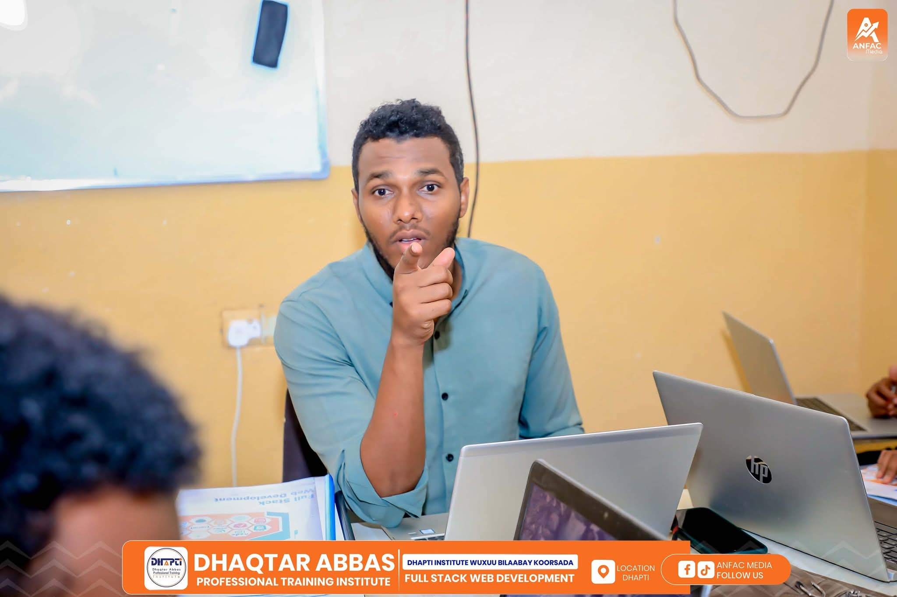

Dhapti Institute waa xarun waxbarasho oo casri ah oo bixisa koorsooyin xirfadeed sida programing, web Development, Office, Graphic Design, iyo Netwoking
We are delighted to welcome you to Dhapti Institute — a hub of knowledge, innovation, and skill-building in the heart of Somalia.
At Dhapti, we believe in empowering youth with the technical and digital skills they need to thrive in today’s rapidly evolving world. Whether you're here to learn computer fundamentals, explore programming, master graphic design, or build websites from scratch — you are in the right place.
Our doors are open to all who seek growth, creativity, and a brighter future. Thank you for joining us on this journey of learning and transformation.Welcome aboard — Let’s build the future together!
Institute waa xarun xirfadeed oo waxbarasho casri ah oo lagu baro xirfadaha kombuyuutarka, barnaamijyada software-ka, iyo xirfadaha casriga ah sida web development, programming, networking, iyo graphic design.
Waxaa la aasaasay si loogu diyaariyo dhalinyarada suuqa shaqada iyadoo la siinayo tababaro tayeysan, shahaadooyin rasmi ah, iyo barnaamijyo la jaanqaadaya baahida casriga ah.
He is a passionate educator with a strong background in computer science, dedicated to empowering learners through practical digital skills.
Our goal is to equip youth with practical digital skills, professional training, and real-world knowledge that empower them to secure jobs, start businesses, and contribute meaningfully to their communities.
To empower youth with practical skills in digital technologies and create pathways to employment, innovation, and economic self-reliance.
To become a leading center for ICT and digital skills development in Somalia and the wider region.
| Courses | Levels | Duration | Total Hours |
|---|---|---|---|
| Computer Fundamentals | Biginner | 4 Month | 64 hrs |
| Office Applications | Biginner | 4 Month | 64 hrs |
| Graphiic Design | int/addvanced | 6 Month | 96 hrs |
| compTIA A+ | intermidiate | 6 Month | 96 hrs |
| Courses | Levels | Duration | Total Hours |
|---|---|---|---|
| Programming (python java) | Biginner to Advanced | 12 Month | 192 hrs |
| Web Development & Design | Biginner to addvanced | 12 Month | 192 hrs |
| Netwoking | Biginner to addvanced | 12 Month | 192 hrs |
Artificial Intelligence helps automate complex tasks, saving time and improving efficiency. It enhances decision-making, personalizes experiences, and drives innovation across industries.
Marketing connects businesses with their target audience, building trust and brand awareness. It drives sales, attracts new customers, and helps grow and sustain long-term success
Hardware skills involve understanding, assembling, and troubleshooting physical computer components. They are essential for maintaining systems, improving performance, and supporting IT infrastructure.
Solution #1: Launching an online learning platform
Solution #2: Adding new courses: Artificial Intelligence, Digital Marketing, Freelancing
Solution #3: Partnering with NGOs and youth development organizations